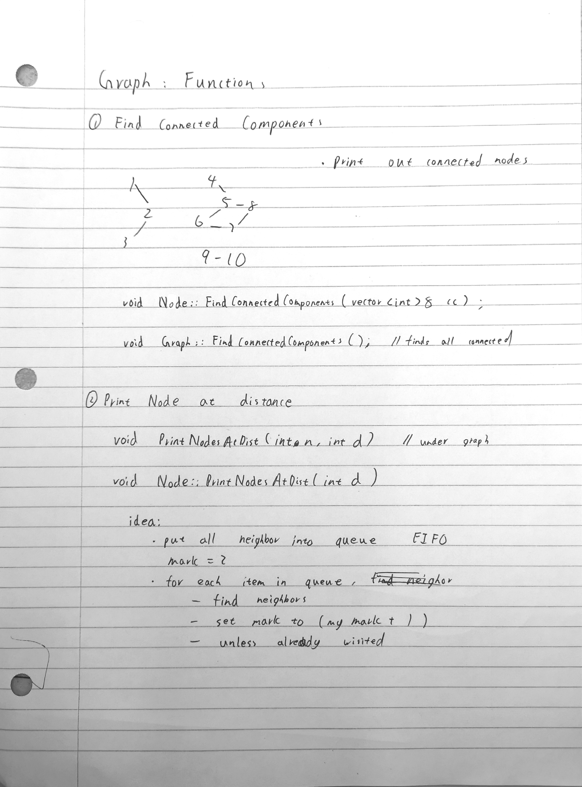

Week 8 Wednesday Graph Functions
Find Connected Components
void FindConnectedComponents() { //Graph function
for(int i = 0; i < num; i++) {
nodes[i].mark = -1;
}
for (int i = 0; i < num; i++) {
vector<int> cc;
nodes[i].FindConnectedComponents(cc);
for (int i : cc) {
cout << i << " ";
}
}
}
void FindConnectedComponents(vector<int>& cc) { //Node Function
if (mark == 1) return;
mark = 1;
cc.push_back(id);
//solution 1
for (int i = 0; i < links.size(); i++) {
Link* cur_lin = links[i];
cur_lin->n1->FindConnectedComponents(cc);
cur_lin->n2->FindConnectedComponents(cc);
}
//solution 2
for (Link* k : links) {
Node* n = k->n1;
if(n == this) n=k->n2;
n->FindConnectedComponents(cc);
}
}
Print Node at Distance
void PrintNodesAtDist(int n, int d) { //Graph Function
for(int i = 0; i < num; i++) {
nodes[i].mark = -1; //distance
}
nodes[n].PrintNodesAtDist(d);
}
void PrintNodesAtDist(int d) { //Node Function
queue<Node*> q;
mark = 0;
q.push(this); //push itself into queue
while(!q.empty()) {
Node* n = q.front();
q.pop();
if (n->mark == d) {
cout << n->id << " ";
} else {
for (Link* k : links) {
Node* neigh = k->n1;
if(neigh == n) neigh=k->n2;
if (neigh->mark < 0) {
neigh->mark = n->mark+1;
q.push(neigh);
}
}
}
}
}